LocalStock
Unified
本地 A 股行情 + 量化回测 + 价格行为 AI 一体化桌面工作台。免登录，全部数据落本地 SQLite。
三件原本分散的东西，收敛到同一个本地工作区
把桌面行情软件、聚宽兼容回测服务、价格行为 AI 三件原本分散的产物，统一到 LocalStock-unified 这一个仓库里。
桌面行情软件
Electron + React 写的 Windows 桌面应用，同花顺深色风格，红涨绿跌，免登录。
聚宽兼容的本地研究 / 回测服务
Node Express + Python 引擎，聚宽风格策略 API，浏览器里用，约 20 个因子双轨校验。
价格行为 AI 服务
Al Brooks 价格行为体系，随桌面端自动启停，自带 venv，可拷到没装 Python 的电脑运行。
唯一权威行情库
data/market/stock_data.db 一个 SQLite 文件，约 1850 万行日线，三个组件共同只读它。
不连云端、不强制登录
实时行情走东财 / 腾讯 / 新浪多源回退拉取，配置与分析结果全部写在本机。
三个组件围绕一个行情库，桌面端是唯一入口
桌面端是主入口，通过量化网关调用聚宽服务；桌面端自动拉起 pa-agent；后两者只读行情库。
行情 / K线 / 回测 / AI / 选股 / 监盘
聚宽策略 API · 多因子研究与生产回测
桌面端自动拉起 / 关闭
约 1850 万行日线 · 三组件共同只读
桌面端：同花顺风格 A 股行情软件，也是唯一入口
技术栈
- 壳：Electron 37 + electron-vite 3
- 渲染：React 19 + Zustand 5 + ECharts 5
- 存储：better-sqlite3（主进程单客户端）
- 编辑：CodeMirror（策略代码）
- 打包：electron-builder · Windows portable
- 子进程：Python 3.9+（akshare / pandas）
进程结构（electron-vite 三段式）
| 进程 | 目录 | 职责 |
|---|---|---|
| 主进程 | electron/ | 建窗口、SQLite、IPC、行情轮询、拉起 Python |
| 预加载 | preload.ts | contextBridge 暴露 window.api |
| 渲染层 | src/ | React UI，5 个 Zustand store |
IPC 契约唯一真相源：shared/types.ts。新增 IPC 必须同步改三处。
聚宽兼容服务：浏览器里的本地研究 / 回测平台
回测链路
# 浏览器 → 回测引擎 → 落库 → 刷新
浏览器 main.js
→ POST /api/backtest/:id/run
→ Express 起 Python 子进程（backtest_engine.py）
→ 读 stock_data.db 执行策略
→ stdout 输出纯 JSON（120s 超时 / 50MB 缓冲）
→ 写入 backtest.db
→ 前端刷新图表
硬约束：引擎 stdout 必须是纯 JSON，策略代码禁止 print()，一律用 log()。
多因子双轨
- 研究轨 scripts/ · pandas · Python 3.11
- 因子发现、IC / 分层、组合迭代
- 生产轨 engine/factor_calc_stdlib.py
- 纯标准库，网页复现同样因子值
- 两轨共用
factor_registry.json定义 - 一致性脚本校验偏差 ≤ 0.001
- 约 20 个因子：动量 / 反转 / 波动 / 价值 / 质量
- 无未来函数三铁律：报告期 +4 月、skip 近 20 日、剔除 ST/涨跌停
价格行为 AI：Al Brooks 体系，随桌面端自动启停
关键事实
- 移植自 PA_Agent_616，界面用 React 重写
- 对行情库只读，无写权限
- 桌面端启动时拉起、退出时关闭
- 端口 0 由系统分配，经端口文件回报
- 大模型配置由桌面端按请求传入，服务端不存密钥
- SSE 流式：两阶段推理 token 逐字推送
- 周期仅 1d / 1w / 1M
运行环境自给（拷到没 Python 的电脑也能跑）
| 优先级 | 策略 |
|---|---|
| ① 优先 | 自带 venv（userData/pa-agent-venv） |
| ② 否则 | 找本机 Python 建 venv（pip 清华源） |
| ③ 都没有 | 下载独立 CPython（约 21MB） |
独立 CPython 走 ghproxy 代理优先；解压必须用 System32\tar.exe（Git GNU tar 会把 C:\ 当主机名）。
三个 SQLite 文件：一个权威行情库 + 两个业务库
| 库 | 位置 | 客户端 | 内容 |
|---|---|---|---|
| 行情库（权威） | data/market/stock_data.db | 三组件共享 | stocks、stock_daily（约 1850 万行 bfq）、trade_calendar、index_daily、分时、分钟 K |
| 桌面业务库 | userData/localstock.db | 仅桌面主进程 | 自选、设置、K 线缓存、画线与历史、预警、AI 审计、选股、监盘 |
| 聚宽业务库 | backtest.db | 仅聚宽服务 | 用户、策略代码、回测记录、逐日净值、成交、持仓 |
行情库路径解析优先级
设置 marketDbPath（界面显式选定） → 环境变量 LOCALSTOCK_MARKET_DB → 便携包同目录 data/ → exe 同目录 data/ → userData/stock_data.db。切换后立即生效，不用重启应用。
实时行情：本地优先 + 东财 / 腾讯 / 新浪多源回退
| 数据 | 优先级链（从左到右依次回退） |
|---|---|
| 实时快照 | 东财 push2 → 腾讯 qt.gtimg.cn（GBK，60s 冷却） |
| 日 / 周 / 月 / 季 K | 本地 stock_daily → kline_cache（TTL） → 东财 push2his |
| 分钟 K（1/5/15/30/60/120） | 新浪 getKLineData → 腾讯 mkline（120 由 60 两两聚合） |
| 分时 | 60s 缓存 → 本地 stock_minute → 新浪 scale=1 → 东财 trends2 |
| 盘口五档 | 仅腾讯（GBK，iconv-lite 解码） |
| 搜索 | 东财 searchapi（过滤 AStock） |
所有出站请求过全局串行 Limiter（250ms 最小间隔，队列超 200 丢最旧）；东财分钟 / 季 K 不可靠，分钟走新浪 / 腾讯，季 K 走本地日线聚合。
12 个模块：从行情浏览到 AI 决策闭环
行情浏览
- 自选股 / 指数栏：行情快照按订阅广播
- K 线图：蜡烛 + MA + 成交量，双 grid 联动
- 分时图：价格线 + 均价线 + 昨收 markLine
- 盘口五档 / 搜索（东财 searchapi）
画线与回测
- K 线画线：手绘 + Python 算法 + 100 版历史
- 量化回测：模板 + CodeMirror 编辑策略
- 策略模板：买入持有 / 双均线 / 布林 / 海龟
AI 与决策
- AI 助手：Agent 工具循环 + 写审计 + 一键回滚
- 自动选股：sqlite-worker 扫描，结果入库
- 实时监盘：行情入库 + AI 预测 + 命中率
- 分时 AI 画线：分时图标注与预测
价格行为 AI
- 侧边栏入口，两阶段推理
- SSE 流式 token 逐字推送，不设总超时
- 周期 1d / 1w / 1M，60 或 100 根 K 线上下文
- 浮窗管理：多窗口视图切换
真实运行截图：每个功能都跑过
以下截图来自打包后的 LocalStock.exe 与聚宽服务 :3000，2026-09-18 实际运行。
行情浏览：自选股 / 沪深 A 股 / 分时
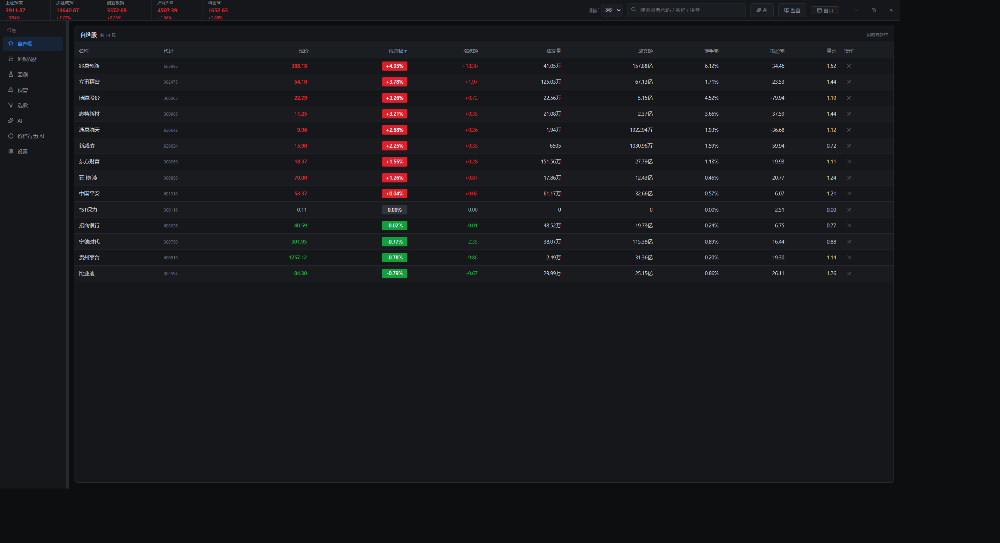
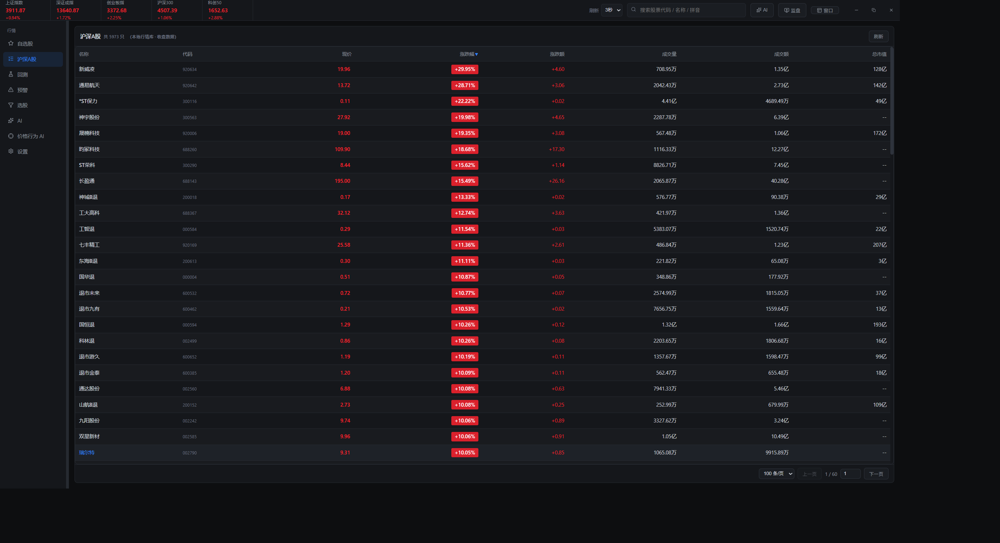
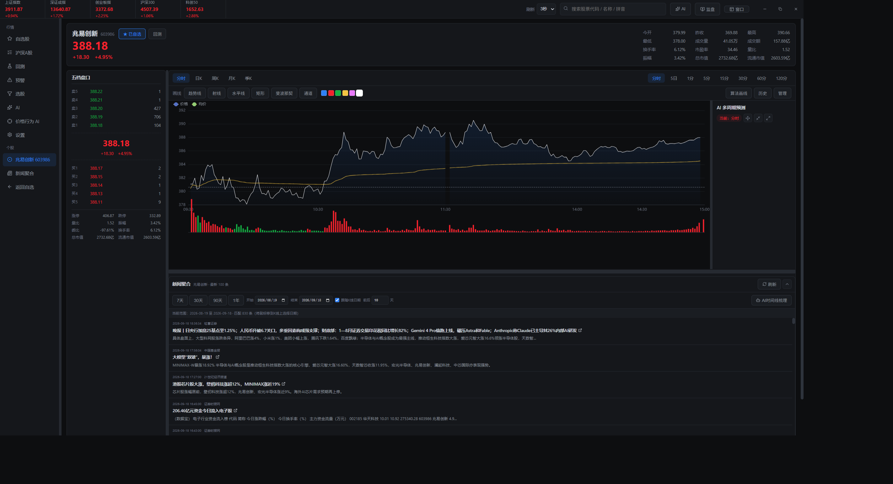
K 线多周期：日 K / 周 K / 月 K
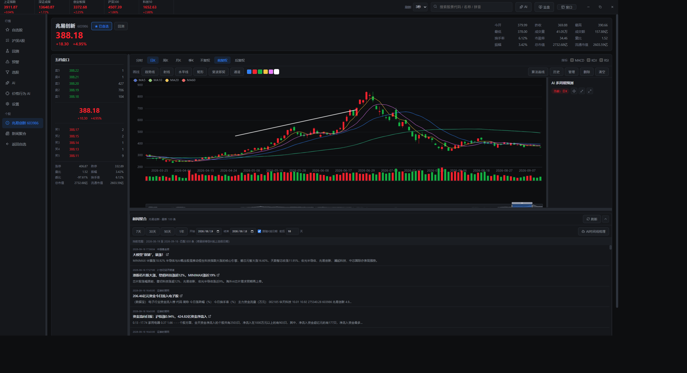
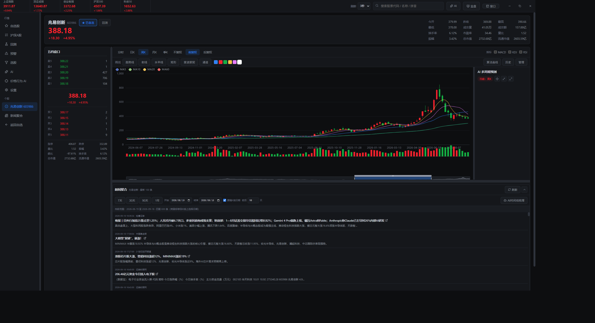
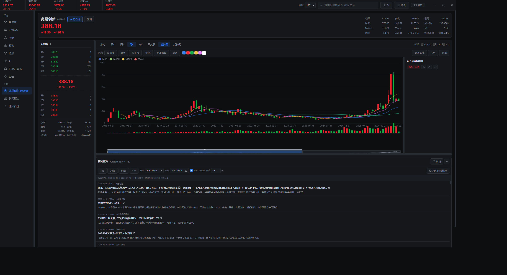
工具：回测 / 预警 / 画线
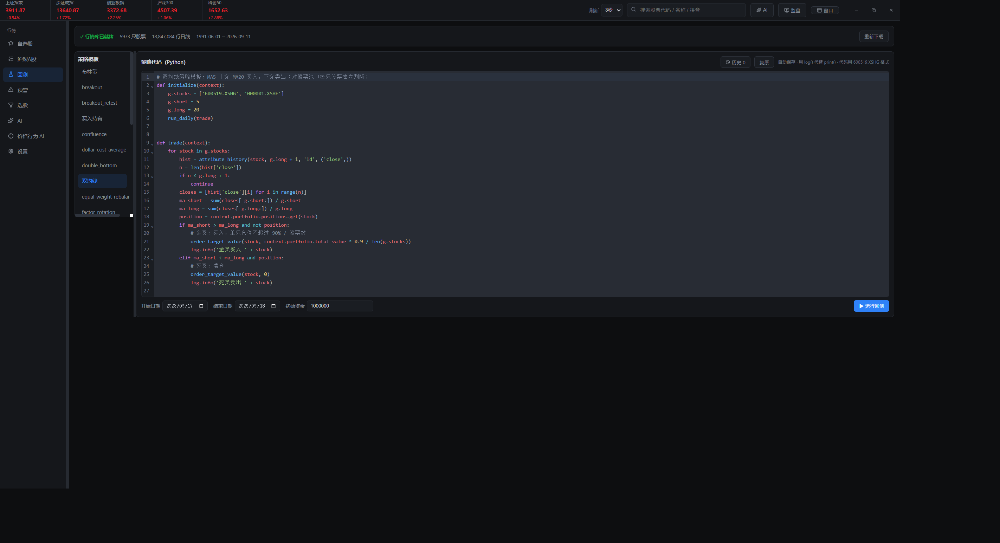
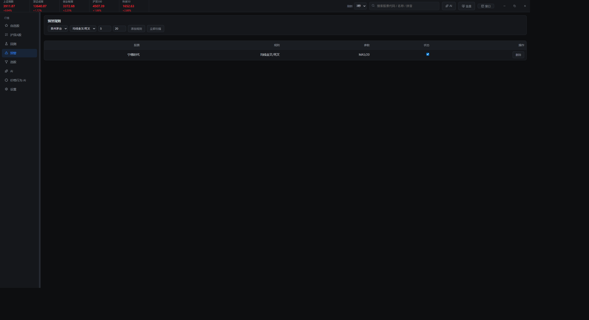
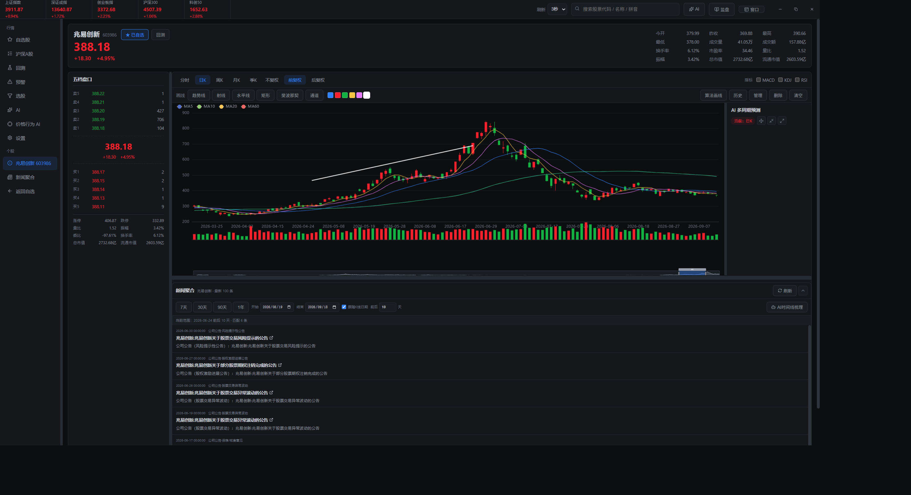
AI：助手 / 价格行为 / 设置
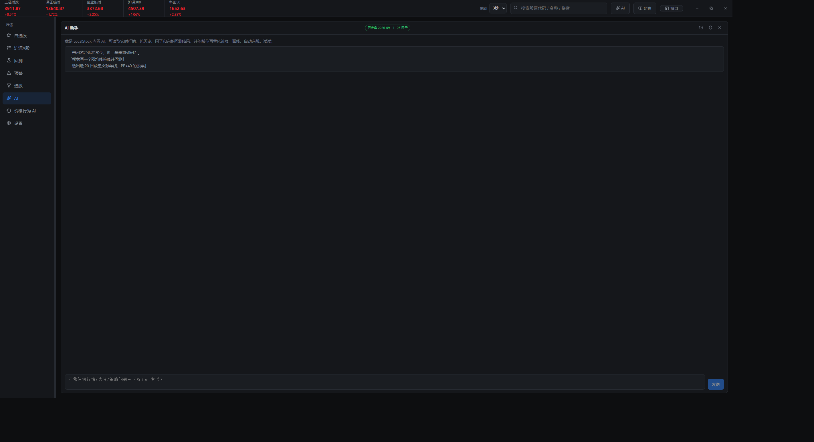
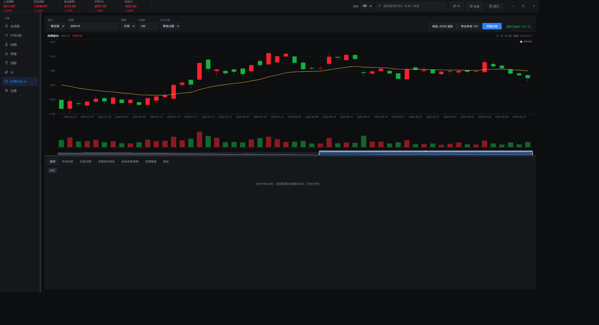
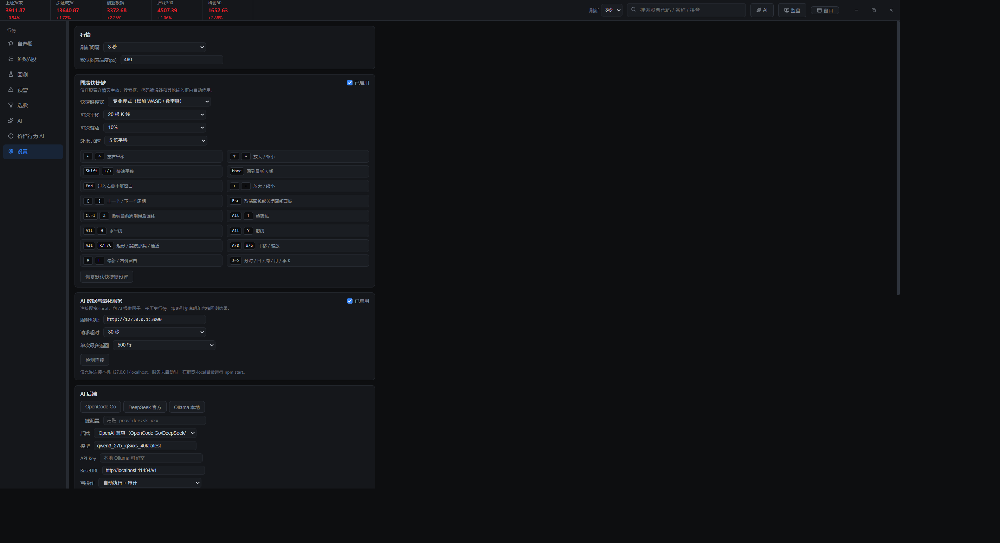
聚宽服务网页：策略列表与回测详情
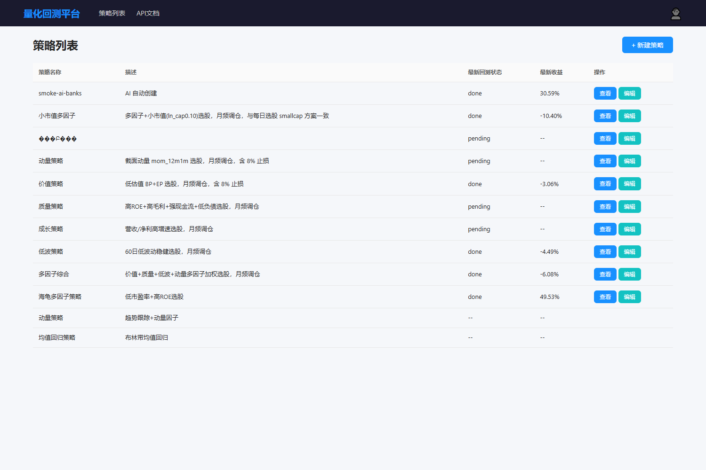
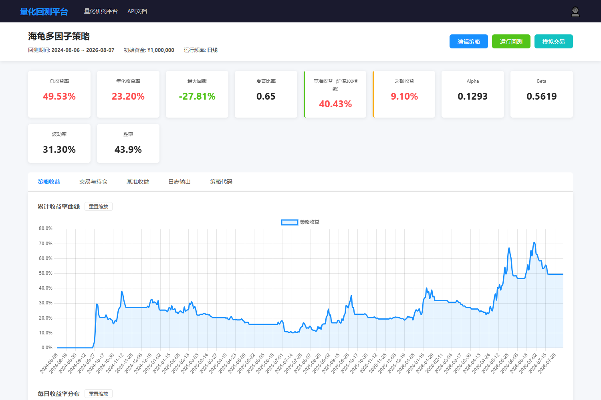
三步启动：装依赖、验工作区、起全部服务
环境要求：Windows · Node.js · Python 3.9+（akshare / pandas）· 数据同步脚本需系统 Python 3.11。
# 一键启动
cd D:\pythonpro\LocalStock-unified
npm run install:all
npm run verify:workspace
powershell -ExecutionPolicy Bypass -File .\tools\start-all.ps1
分别启动
tools/start-quant.ps1只起聚宽服务tools/start-desktop.ps1只起桌面端
常用命令（改完必跑）
npm run typecheck类型检查npm testVitest 单测npm run build:win打 Windows portable 包
十条硬约束：改代码前必须知道
不得在其他目录新建独立行情库副本。
价格行为 AI 对行情库无写权限。
types.ts / preload.ts / ipc.ts handler 必须同步改。
禁止 print()，日志一律 log() 或 stderr。
策略写 600519.XSHG，库内键是 6 位 600519。
行情源只有现存股票，长周期回测收益偏高。
深色主题，红涨绿跌，复用全局类，不写内联样式。
数据库、运行状态、密钥、缓存、node_modules、打包产物。
根目录 npm run typecheck 与 npm test。
desktop/desktop 与 聚宽-local 是历史版本，只读保留。
一份本地自用的 A 股工作台
| 层 | 技术选型 |
|---|---|
| 桌面壳 | Electron 37 · electron-vite 3 · electron-builder 26 |
| 桌面渲染 | React 19 · Zustand 5 · ECharts 5 · CodeMirror |
| 本地存储 | better-sqlite3（主进程单客户端，同步 API） |
| 研究服务 | Node Express · 原生 Chart.js 前端 · 纯标准库 Python 引擎 |
| 因子研究 | pandas（Python 3.11），与 stdlib 生产轨双轨校验 |
| 行情源 | 东财 push2 · 腾讯 qt.gtimg.cn · 新浪财经 |
| AI 与测试 | Python SSE 自带 venv · Vitest · Playwright 视觉测试 |